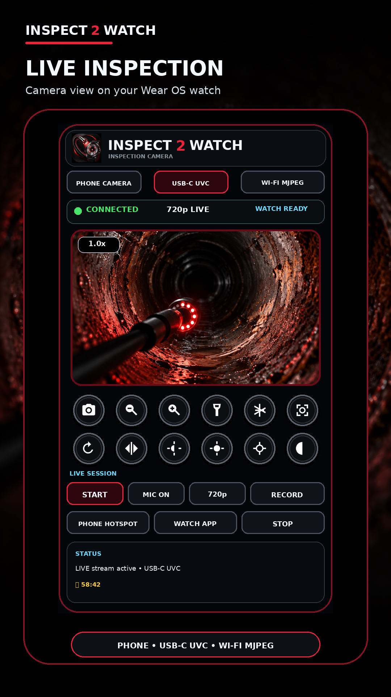

Android · Wear OS
INSPECT 2 WATCH
在手表上查看检查摄像头
仍在准备中，目前不可安装。

主要功能
在手表上查看检查摄像头
- 计划预览兼容 USB UVC、Wi-Fi MJPEG 及手机摄像头
- 将图像传到 Wear OS；需要兼容设备
兼容性与发布状态
Google Play 的提供情况取决于国家或地区、设备和发布状态。
Android · Wear OS
在手表上查看检查摄像头
仍在准备中，目前不可安装。

在手表上查看检查摄像头
Google Play 的提供情况取决于国家或地区、设备和发布状态。